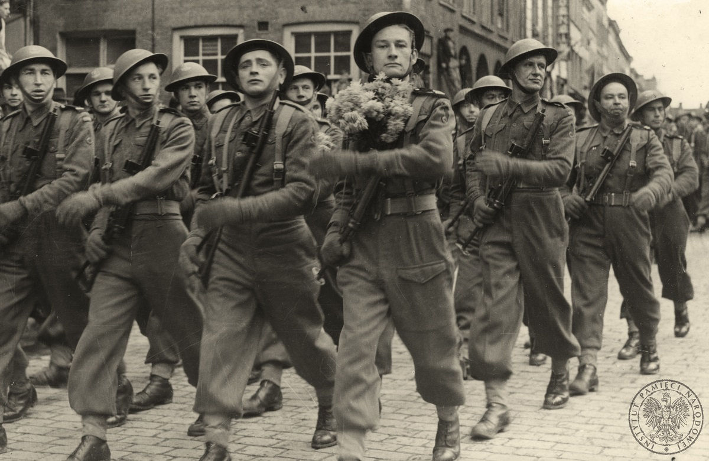

11 LISTOPAD
Na przełomie października i listopada 1918 r. wobec rozpadu monarchii austro-węgierskiej i zapowiedzi bliskiej klęski Niemiec Polacy coraz wyraźniej odczuwali, że odbudowa niepodległego państwa polskiego jest bliska
Zaistniała sytuacja międzynarodowa była dla Polski wyjątkowo korzystna. Cztery lata wcześniej w chwili wybuchu I wojny światowej Polacy mogli jedynie pomarzyć o tym, że w momencie jej zakończenia wszystkie trzy państwa zaborcze będą właściwie bezsilne.
Szansy danej przez historię Polacy nie zmarnowali i aktywnie przystąpili do przejmowania władzy na ziemiach polskich okupowanych przez państwa centralne.
W Cieszynie już od 19 października 1918 r. działała i sprawowała funkcje rządowe Rada Narodowa Księstwa Cieszyńskiego pod przewodnictwem księdza Józefa Londzina.
28 października 1918 r. w Krakowie posłowie polscy do parlamentu austriackiego powołali Polską Komisję Likwidacyjną, która dwa dni później przejęła władzę w Galicji. Na jej czele stanął Wincenty Witos, przywódca PSL „Piast”.
31 października rozpoczęto przejmowanie władzy w okupowanej przez Austro-Węgry części Królestwa. W nocy z 6 na 7 listopada w zajętym kilka dni wcześniej Lublinie powołano Tymczasowy Rząd Ludowy Republiki Polskiej, którego premierem został Ignacy Daszyński, przywódca galicyjskich socjalistów.
W Warszawie od września 1917 r. działała powołana przez Niemcy i Austro -Węgry Rada Regencyjna. Jej członkami byli książę Zdzisław Lubomirski, arcybiskup Aleksander Kakowski i hrabia Józef Ostrowski. W grudniu 1917 r. Rada Regencyjna utworzyła gabinet ministrów, na czele którego stanął Jan Kucharzewski. Na początku listopada 1918 r. regenci zdawali sobie sprawę, że ich polityczna rola dobiega końca i starali się powołać rząd, który miałby szerokie poparcie społeczne i któremu mogliby oddać władzę z przekonaniem, że w możliwie krótkim czasie przeprowadzi on wybory do Sejmu.
Sytuację polityczną w Warszawie zmieniło w sposób zasadniczy przybycie 10 listopada 1918 r. specjalnym pociągiem z Berlina uwolnionego z twierdzy magdeburskiej Józefa Piłsudskiego.
Na Dworcu Głównym powitał go m.in. reprezentujący Radę Regencyjną książę Zdzisław Lubomirski.
Tuż po przybyciu do Warszawy Józef Piłsudski odbył rozmowy z członkami Rady Regencyjnej. W ich wyniku zrezygnował z planowanego wyjazdu do Lublina, gdzie od trzech dni na wyzwolonych terenach działał Tymczasowy Rząd Republiki Polskiej z Ignacym Daszyńskim na czele. Rząd ten zresztą na wiadomość o powrocie Piłsudskiego z Magdeburga oddał mu się do dyspozycji.
Na decyzję Piłsudskiego o pozostaniu w stolicy bez wątpienia miał wpływ fakt, iż w dniu jego przybycia do Warszawy niemiecka okupacja była już w stanie rozkładu i perspektywa utworzenia Rządu Narodowego w stolicy wydawała się bardzo bliska.
Generalny Gubernator gen. Hans von Beseler potajemnie opuścił miasto, a POW razem z żołnierzami Polskiej Siły Zbrojnej, będącej pod rozkazami Rady Regencyjnej, przystąpiły do rozbrajania stacjonujących w Warszawie oddziałów niemieckich.
Na ogół akcja rozbrajania przebiegała bez walki, choć zdarzały się również ostre starcia.
Do zaciętych walk doszło m.in. przy opanowywaniu Ratusza i Cytadeli.

Żołnierzy niemieckich wraz z urzędnikami w Warszawie było ok. 30 tys., natomiast w całym Królestwie 80 tys. Jeśli dodać do tego wojska niemieckie stacjonujące na froncie wschodnim, których liczebność wynosiła ok. 600 tys., to widać wyraźnie, iż gdyby jednostki niemieckie zamierzały stawiać opór, to wówczas powstające państwo polskie znalazłoby się bez wątpienia w sytuacji krytycznej. Na szczęście większość niemieckich żołnierzy myślała wówczas przede wszystkim o tym, jak najszybciej powrócić do domów.
Problemem ewakuacji niemieckiej armii Józef Piłsudski zajął się zaraz po przybyciu do stolicy. Jeszcze 10 listopada doszło do jego spotkania z niemiecką Centralną Radą Żołnierską.
W wyniku zawartych porozumień do 19 listopada ewakuowano jednostki niemieckie z Królestwa.
Przyjazd Piłsudskiego do Warszawy wywołał powszechny entuzjazm jej mieszkańców i tylko o jeden dzień wyprzedził wiadomość o tym, że w okolicach Compiegne delegacja rządu niemieckiego podpisała zawieszenie broni, które kończyło działania bojowe I wojny światowej.
W tych dniach Polacy uświadomili sobie, że po latach niewoli odzyskali niepodległość.
Atmosferę tej wyjątkowej chwili tak opisywał Jędrzej Moraczewski: „Niepodobna oddać tego upojenia, tego szału radości, jaki ludność polską w tym momencie ogarnął. Po 120 latach prysły kordony. Nie ma <
Józef Piłsudski mając powszechne poparcie społeczne zdecydował się przejąć władzę od regentów, podkreślając w ten sposób jej ciągłość i legalny charakter. Nie wszyscy byli zadowoleni z tej procedury, wskazując na to, iż Piłsudski nie powinien być sukcesorem instytucji powołanej do życia przez okupantów.
Bez względu na te komentarze Józef Piłsudski stał się rzeczywistym przywódcą tworzącego się państwa polskiego. Rząd lubelski rozwiązał się, Rada Regencyjna ustąpiła, a Polska Komisja Likwidacyjna zaakceptowała istniejącą sytuację.
13 listopada właśnie szefowi rozwiązanego rządu lubelskiego Ignacemu Daszyńskiemu Piłsudski powierzył misję tworzenia nowego gabinetu. Zakończyła się ona jednak niepowodzeniem, przede wszystkim z powodu sprzeciwu stronnictw prawicowych, zwłaszcza Narodowej Demokracji.
Ostatecznie 18 listopada pierwszy oficjalny rząd niepodległej Polski utworzył inny socjalista Jędrzej Moraczewski, który nie wzbudzał tak wielkich obaw prawicy, jak Daszyński.
Cztery dni później 22 listopada 1918 r. nowy rząd opracował, a Józef Piłsudski zatwierdził „Dekret o najwyższej władzy reprezentacyjnej Republiki Polskiej”.
Na mocy tego dekretu, który był swego rodzaju ustawą zasadniczą, Piłsudski obejmował jako Tymczasowy Naczelnik Państwa „Najwyższą Władzę Republiki Polskiej” i miał ją sprawować do czasu zebrania się Sejmu Ustawodawczego. Dekretem z 28 listopada 1918 r. wybory do Sejmu zarządzone zostały w dniu 26 stycznia 1919 r.
Listopad 1918 r. był dopiero początkiem budowy niepodległej Polski i początkiem walki o jej granice. 29 listopada 1918 r. Józef Piłsudski zwracając się w Belwederze do grona najbliższych współpracowników tak mówił o odzyskanej niepodległości: „Jest to największa, najdonioślejsza przemiana, jaka w życiu narodu może nastąpić. Przemiana, w której konsekwencji powinno się zapomnieć o przeszłości; powinno się przekreślić wielkim krzyżem starem porachunki (...) A czas przed nami jest krótki i tylko wspólnym wysiłkiem możemy zdecydować na jakiej przestrzeni, w jakich granicach naszą wolność obwarujemy i jak silnie staniemy na nogach, zanim dojdą z powrotem do siły i pełnego głosu sąsiedzi ze wschodu i z zachodu”. (PAP)